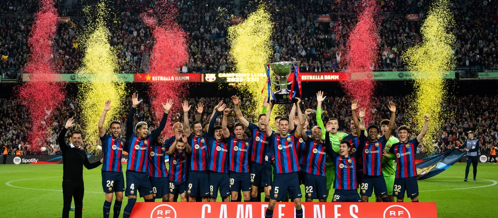

Club
Bienvenidos al FC Barcelona El Futbol Club Barcelona, conocido mundialmente como FC Barcelona o simplemente Barça, es uno de los clubes más emblemáticos y exitosos en la historia del fútbol. Fundado en 1899, el Barça ha sido un pilar tanto en el deporte como en la cultura, con millones de seguidores a nivel global. El lema "Més que un club" (Más que un club) refleja la identidad única del FC Barcelona, un equipo que no solo busca la excelencia en el fútbol, sino que también tiene un fuerte compromiso con la sociedad y los valores que promueve. A lo largo de los años, el club ha logrado un sinfín de títulos nacionales e internacionales, incluyendo varias Ligas de Campeones de la UEFA, Ligas españolas y Copas del Rey. Nuestra Historia Desde su fundación, el FC Barcelona ha sido un símbolo de lucha, pasión y orgullo para todos los catalanes, y su impacto se ha extendido más allá de las fronteras de España. El Camp Nou, su estadio, es uno de los más grandes y prestigiosos del mundo, y alberga a más de 99,000 aficionados en cada partido, creando un ambiente vibrante y lleno de emoción. El Barça ha sido hogar de algunos de los mejores futbolistas de la historia, como Lionel Messi, Xavi Hernández, Andrés Iniesta y Ronaldinho, quienes han dejado una huella imborrable en el fútbol mundial con su talento y dedicación. Además, el club ha sido pionero en la promoción de un estilo de juego único basado en el "fútbol de posesión" y el "tiki-taka", que ha revolucionado el deporte. Nuestros Valores El FC Barcelona se caracteriza por su fuerte identidad, compromiso social y valores de respeto, unidad, y trabajo en equipo. El club no solo se dedica a fomentar el talento deportivo, sino también a impulsar proyectos educativos, culturales y sociales a través de la Fundación FC Barcelona. Únete a Nuestra Historia El FC Barcelona invita a sus seguidores a ser parte de esta gran familia. Ya sea desde las gradas del Camp Nou, apoyando desde casa o siguiendo nuestras redes sociales, todos somos Barça. ¡Vive el fútbol con nosotros y forma parte de una de las instituciones más grandes del deporte mundial!
Deporte
Deportes en el FC Barcelona En el FC Barcelona, el fútbol es solo una de las muchas disciplinas deportivas que componen nuestra familia. A lo largo de su rica historia, el club ha demostrado un compromiso inquebrantable con la promoción y el desarrollo del deporte en todas sus formas. Fútbol: El Alma del Barça El fútbol es, sin duda, el corazón del FC Barcelona. Desde su fundación en 1899, el equipo ha sido un referente mundial, conquistando títulos tanto nacionales como internacionales, y formando parte integral de la cultura deportiva global. Con una filosofía de juego que combina técnica, control y pasión, el Barça ha sido hogar de leyendas que han marcado una época, como Lionel Messi, Xavi Hernández, y Andrés Iniesta. Cada temporada, los equipos masculinos y femeninos del Barça continúan luchando por la excelencia, buscando ganar títulos y promover el espíritu de equipo que ha caracterizado al club durante más de un siglo. La Liga, la UEFA Champions League, y la Copa del Rey son solo algunos de los trofeos que el club ha alzado, y que siguen siendo objetivos de todos los jugadores y entrenadores en cada campaña.